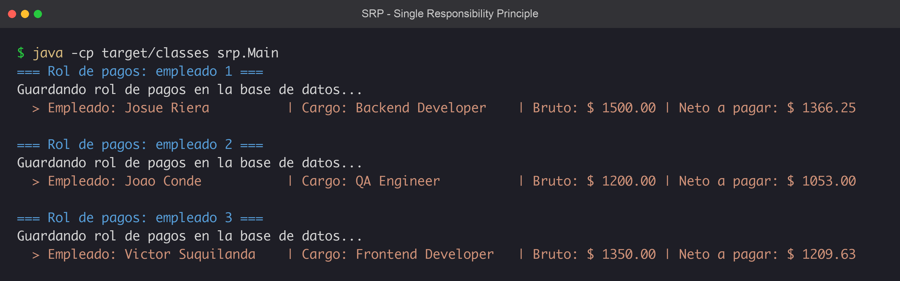
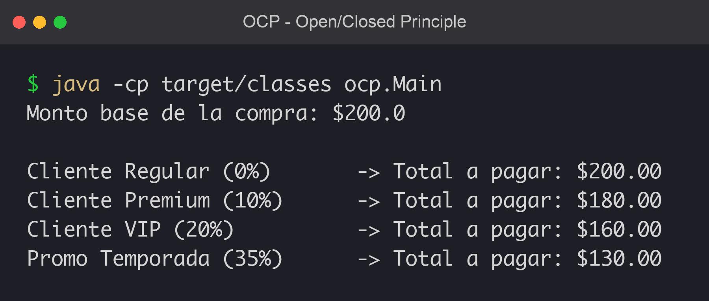
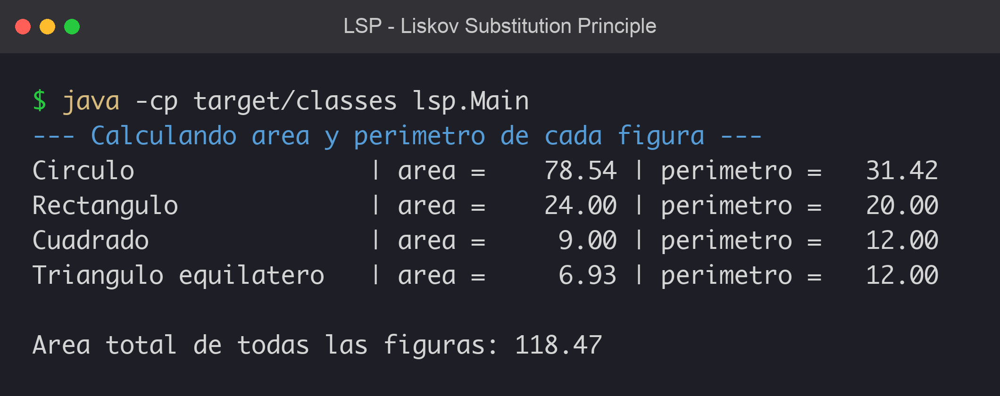
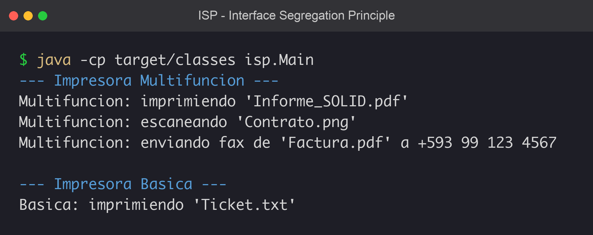
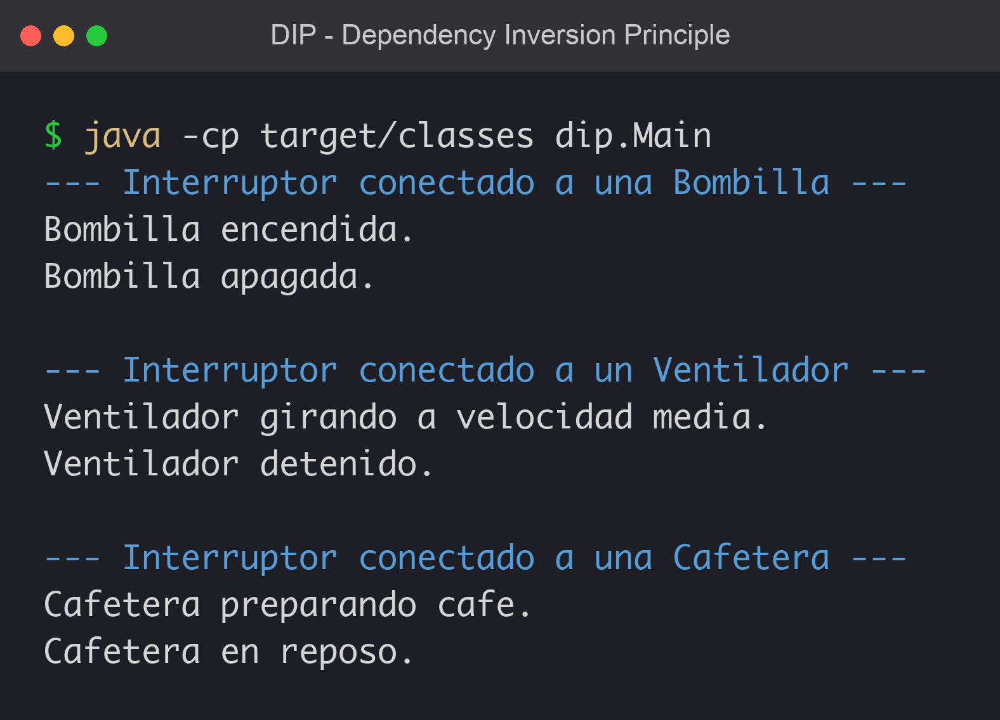

Refactorización de un proyecto base aplicando los cinco principios SOLID.
| Categoría de grupo | Semana 1 - Autoinscripcion |
| Nombre de grupo | S1 1 - Martes |
| Integrantes | Josue Riera · Joao Conde · Victor Suquilanda |
| Lenguaje / Entorno | Java (OpenJDK) · VS Code |
Cada principio está en su propio paquete (srp · ocp · lsp · isp · dip),
cada uno con su clase Main. El código fuente, las capturas y las reflexiones
están en el repositorio.
Sistema de nómina: cada clase tiene una sola responsabilidad
(datos, cálculo, formato, persistencia) y ServicioNomina solo coordina.

Cálculo de descuentos por estrategia. Se agrega DescuentoTemporada
sin modificar CalculadoraPrecio: abierto a extensión, cerrado a modificación.

Figuras geométricas: cualquier subtipo de Figura sustituye a otro
en el cálculo de área total sin romper el programa.

Dispositivos de oficina: interfaces pequeñas (Impresora,
Escaner, Fax). La impresora básica solo implementa lo que usa.

El Interruptor (alto nivel) depende de la abstracción
Dispositivo; la implementación concreta se inyecta por constructor.

La reflexión completa por cada principio está en el archivo README.md del
repositorio. A continuación las reflexiones individuales del equipo:
Josue Riera (DIP). Lo que más me costó fue desaprender la costumbre de instanciar
todo con new dentro de la propia clase. Un Interruptor "ingenuo"
habría tenido un new Bombilla() adentro y parecía inofensivo, hasta que al
sumar el ventilador y la cafetera cada dispositivo nuevo me empujaba a editar el interruptor.
Recibir un Dispositivo por constructor invirtió la dependencia y lo dejó
desacoplado y testeable. En proyectos reales aplicaría DIP al integrar servicios externos:
programar contra una interfaz e inyectar la implementación desde afuera.
Joao Conde (LSP). El más difícil fue aceptar que heredar es comprometerse con un
contrato de comportamiento, no solo reusar código. Con las figuras quedó clarísimo: el
Main suma áreas recorriendo una lista de Figura sin saber el
subtipo, así que un solo subtipo incoherente rompería todo el cálculo. Desde la calidad,
SOLID elimina sorpresas y hace las pruebas confiables y los fallos fáciles de aislar.
Victor Suquilanda (SRP). Suena obvio que "cada clase haga una sola cosa", pero aplicarlo bien obliga a decidir con cuidado dónde cortar. Al refactorizar la nómina pasamos de una clase que lo hacía todo a cuatro piezas con una única razón para cambiar cada una. SOLID ordena el trabajo en equipo: cada quien toca una clase distinta sin pisarse. En frontend aplicaría SRP separando la presentación de la lógica de datos.